All seven chapters of Mechanics of Machines II, and a tutorial class of their calculations, as slide decks you can play with: 3D labs to turn round and take apart, live models of the constructions, worked examples where you change the numbers and the working follows, and a self-check at the end of each chapter. Each chapter opens as 16:9 slides that scale to the screen: click or press Space or the right arrow key for the next slide, the left arrow key to go back, or choose “Page view” to read it as one scrolling page, which suits a phone. In full screen the bar at the bottom hides itself and comes back when the mouse is at the bottom edge. “PDF” in the same bar opens the print dialog: choose Save as PDF to get every slide on its own 16:9 page.
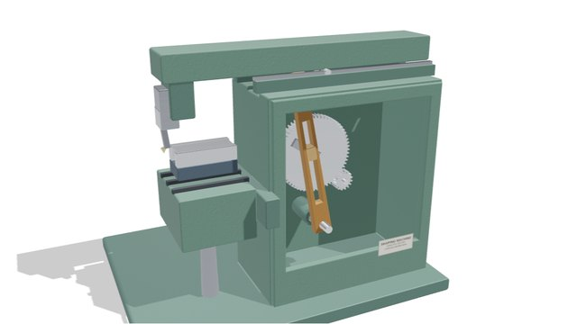
Links, pairs and mobility; four-bar and slider-crank chains, Grashof's law and inversions; velocity and acceleration analysis, instantaneous centres, Coriolis and Klein's construction.
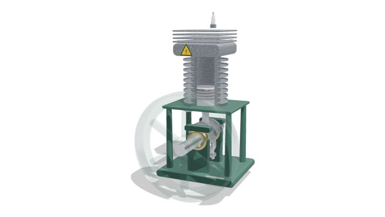
D'Alembert's principle, static force analysis, mass moment of inertia and the two-mass system; forces in the engine mechanism, turning-moment diagrams, fluctuation of energy and flywheel design.
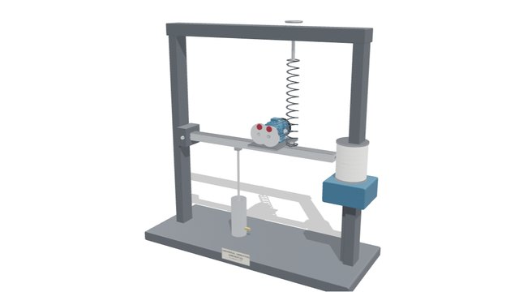
Free vibration by the equilibrium, energy and Rayleigh methods; mass of the spring; damping and logarithmic decrement; forced and forced-damped vibration, magnification factor, transmissibility, unbalance and support motion.
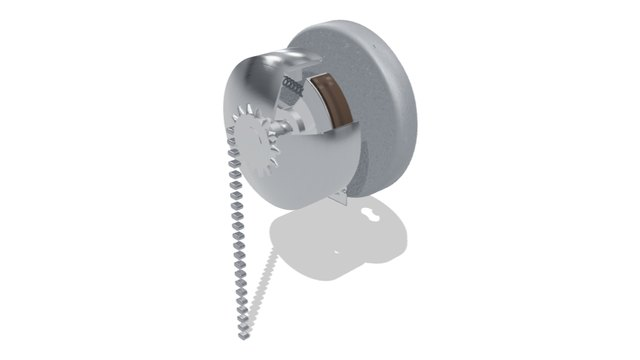
Laws of friction and the friction angle; square and V threads and the screw jack; pivots and collars under uniform pressure and uniform wear; plate, multi-plate, cone and centrifugal clutches; rolling bearings and friction at a journal.
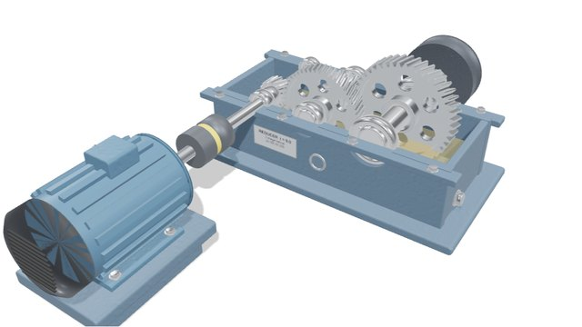
Gear terms, the law of gearing and involute teeth; path and arc of contact, contact ratio, interference and the minimum number of teeth; simple, compound and reverted trains; epicyclic trains by the tabular method, with torques.
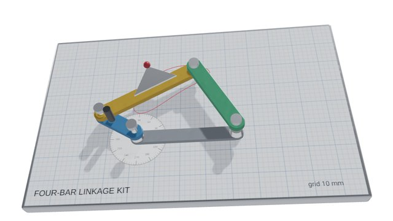
Type, number and dimensional synthesis; two- and three-position motion generation; crank-rocker design from rocker swing and time ratio; function generation with Freudenstein's equation, Chebyshev spacing and structural error.
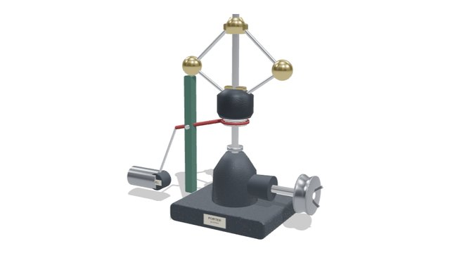
Watt, Porter, Proell and Hartnell governors; friction, controlling force, stability, sensitiveness, hunting, effort and power; gyroscopic couple and its effect on aircraft, ships and four- and two-wheeled vehicles.
Every worked calculation from the seven chapters in one deck, arranged by topic. Each problem has a slide with the data, a slide that explains every term it uses, and a solution in named steps.
Stand-alone models for the lab sessions. Each one is also linked from the section of the notes it belongs to.
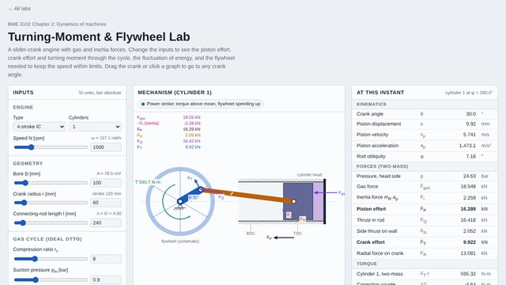
Gas and inertia forces in a slider-crank engine. Piston effort, crank effort, turning-moment diagrams, fluctuation of energy and flywheel rim design.
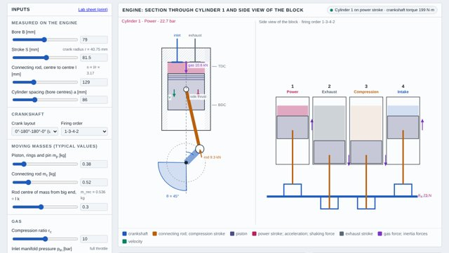
Measure a real inline-four, then see piston motion, cylinder pressure, the turning moment diagram, the flywheel it needs and the forces and couples left unbalanced. Comes with a printable lab sheet and degree wheel.
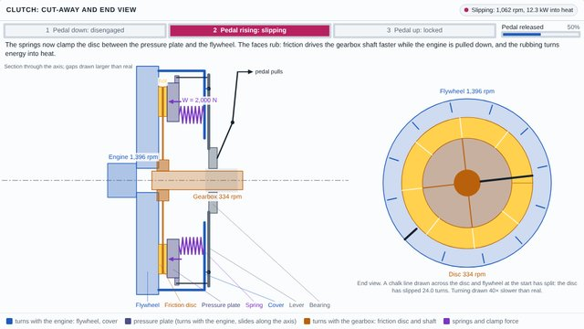
Single- and multi-plate clutches. Torque capacity by uniform pressure and uniform wear, then the engagement itself: slip, heat, lock-up and stalling.
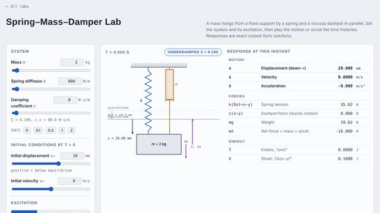
A mass hanging from a spring and dashpot. Free vibration in all damping cases, harmonic forcing, support motion, resonance, beats and isolation.
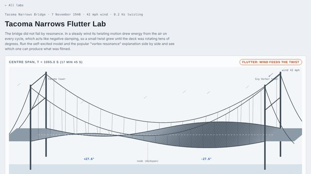
Why the bridge failed by self-excited torsional flutter, not resonance. Run both explanations side by side and compare them with what was filmed.
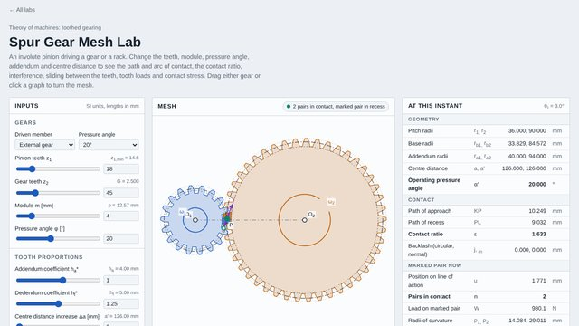
Involute pinion with a gear or rack. Path and arc of contact, contact ratio, interference and minimum teeth, sliding, tooth load and contact stress.